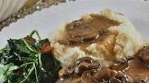

Garlic Buttermilk Mashed Potatoes

Description
This is a simple, quick recipe that is a definite people-pleaser.
Ingredients
- 5 large potatoes, scrubbed and cubed
- ¼ cup minced onion
- ¾ cup butter
- ½ cup buttermilk
- 1 tablespoon garlic powder
- salt and ground black pepper to taste
Steps
- Place potatoes and onion into a large pot and cover with water; bring to a boil. Reduce heat to medium-low and simmer until tender, about 20 minutes. Drain.
- Transfer cooked potatoes and onion to a large bowl. Add butter, buttermilk, garlic powder, salt, and black pepper; blend together until creamy, 1 to 2 minutes.